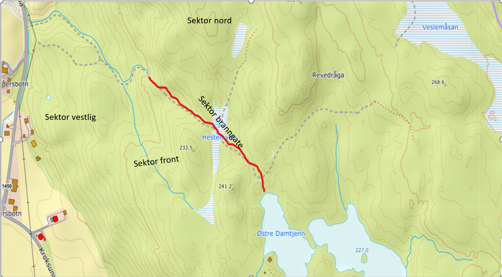
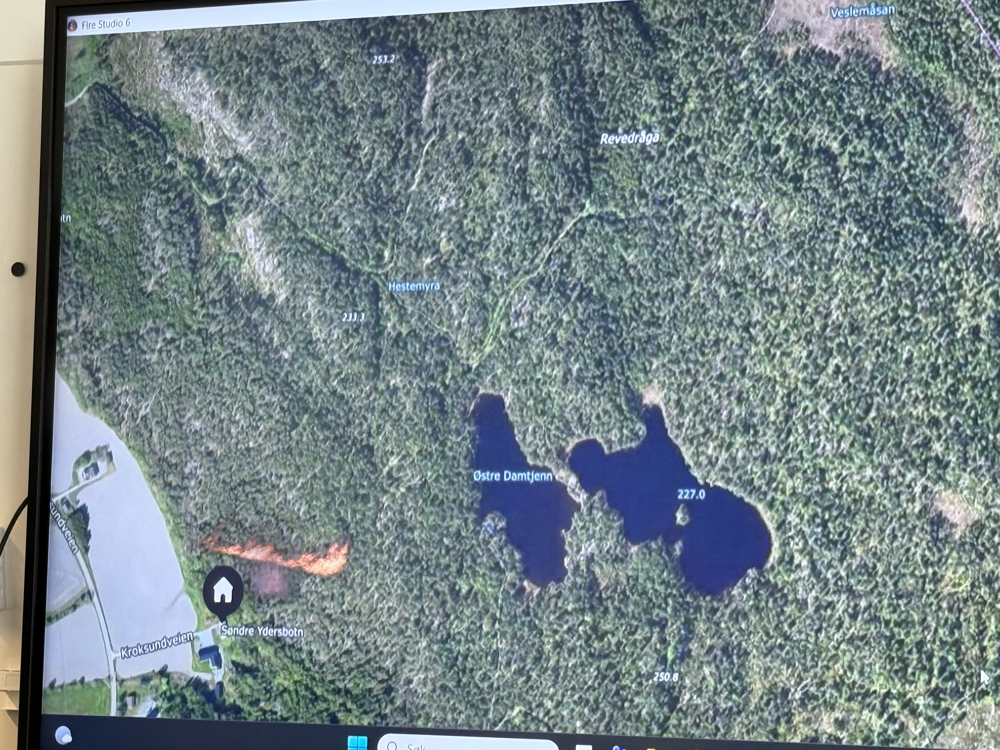
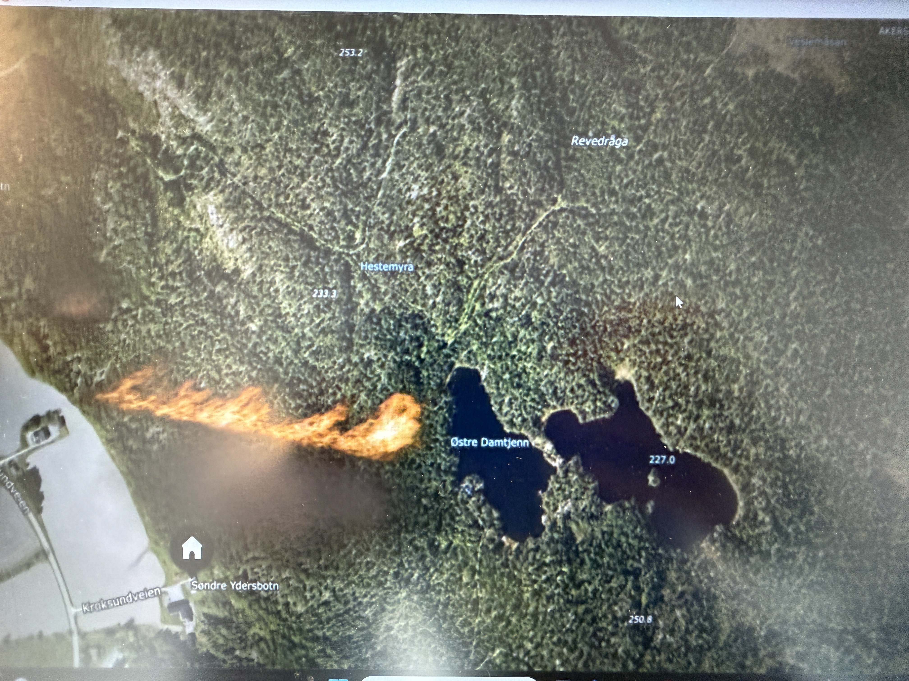

Plan
Arbeidsoversikt for Leder Plan
Innsatsplanens minimum
- Situasjonen: kort beskrivelse og forventet utvikling.
- MMI og oppdrag: innsatsleders mål og prioritering.
- Utførelse: taktikk, sektorisering og hovedtiltak.
- Ressurser: tilgjengelig, bestilt, brukt og mangler.
- HMS: styrende SJA for Branngate, Vann/slange og observasjon/kontroll.
- Ledelse og samband: ansvar, kontaktinfo og talegrupper.
Ved større hendelser
- Skisser, tegninger, kart og rutenett.
- Rammer for HMS og spesielle faremomenter.
- Møteplan for ledelsen.
- Deadlines for planer og endringer.
- Intern informasjon, logg og arkivering.
Vær - taktisk betydning

Vedlagt værbilde viser: tørt og varmt dagtid, vindøkning fredag ettermiddag/kveld og fortsatt vind lørdag. Dette gir risiko for rask spredning, gnistkast/flyvebrann og reantenning i kanter.
Dag 1 - torsdag 30. april
Varmt og tørt på dagtid.
Vind omkring 2-4 m/s, avtagende kveld/natt.
Dag 2 - fredag 1. mai
Varmt og solrikt fra formiddag.
Vind øker utover dagen, kast opp mot ca. 8-10 m/s.
Dag 3 - lørdag 2. mai
Fortsatt vind og stigende temperatur utover dagen.
Behov for vakthold og kontroll av begrensningslinjer.
Dynamisk plansyklus
Plan
Hva er trusselen, hva skjer fremover, og hvilke alternativer har vi?
Operasjon
Hva må gjøres nå, hvor skal ressursene settes inn, og hva trenger sektorene?
Logistikk
Hva er tilgjengelig, hva er bestilt, hva er på vei, og hvor lenge holder vi ut?
Nåsituasjon
| Punkt | Status |
|---|---|
| Hendelse | Skogbrann etter bygningsbrann ved Kroksundveien 1074, 1970 Hemnes. Huset er lagt til grunn slukket. |
| Berørte/verdier truet | Naturmangfold/verneverdier ved Revedråga/Hestemyra og hogst-/produksjonsklar skog nord for Hestemyra. |
| Forventet utvikling 1-3 timer | Brannen er fortsatt i spredning. Dronebilder viser aktiv brannlinje i terrenget sør/sørvest for Østre Damtjenn og i aksen mot Hestemyra/Revedråga. Vestlig flanke har god kontroll og er begrenset mot Langstranda. Østlig flanke er ikke under kontroll. |
| Worst case | Brannen passerer begrensningslinje/hogstgate, får feste i produksjonsklar skog og truer verneområde/naturverdier. |
| Usikkerhet | Eksakt brannbredde, flankeutvikling, terrengbæreevne, vannuttak, adkomst og behov for maskinell forsterkning. 110 arbeider fortsatt med skogsmaskiner. |
Planfrister
| Leveranse | Frist |
|---|---|
| Første situasjonsbilde | Snarest, basert på sektorrapport og kart. |
| Første innsatsplan | Umiddelbart for 0-3 timer. |
| Neste stabsmøte | Innen 30 minutter etter etablering av KO/stab. |
| Nattplan Dag 1 | Kontrollere og holde flankene gjennom natten. Begrense aktiv innsats til sikre oppdrag med retrettvei og samband. |
| Dag 2 kl. 06:00 | Oppstart aktiv slokking med skogbrannhelikopter og bakkemannskap etter ny sikkerhetsbrief/SJA. |
| Neste planrevisjon | Minst hver time eller ved vesentlig endring i vind/brannfront/ressurstilgang. |
Nøkkelopplysninger
| Punkt | Status |
|---|---|
| KO | Etablert ved Kroksundveien 1039. |
| Samband sektorer | 02-INNSATS10. |
| Samband helikopter | SKOGBRANN 01. |
| Sivilforsvaret | Ankommer Dag 1 kl. 17:00. |
| Skogbrannhelikopter | Ankommer Dag 2 kl. 06:00. |
| Skogsmaskiner | 110 jobber fortsatt med avklaring. |
Sektorkart

Sektorer inntegnet: vestlig, front, branngate og nord. Branngate/begrensningslinje ligger ved Hestemyra mot Revedråga/verneområdet.
Dronebilder
Dronebilder brukes som støtte for oppdatert situasjonsbilde. Prioritet fra bildene: front, østlig flanke og branngater nord mot Hestemyra/Revedråga.

Aktiv brannlinje og terrengakse mot Østre Damtjenn/Hestemyra.

Utsnitt mot Hestemyra/Revedråga. Må kvalitetssikres mot sektorobservasjoner.